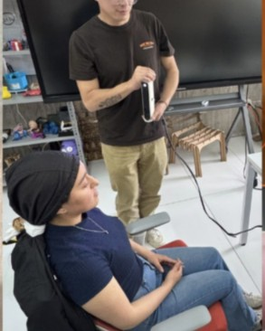
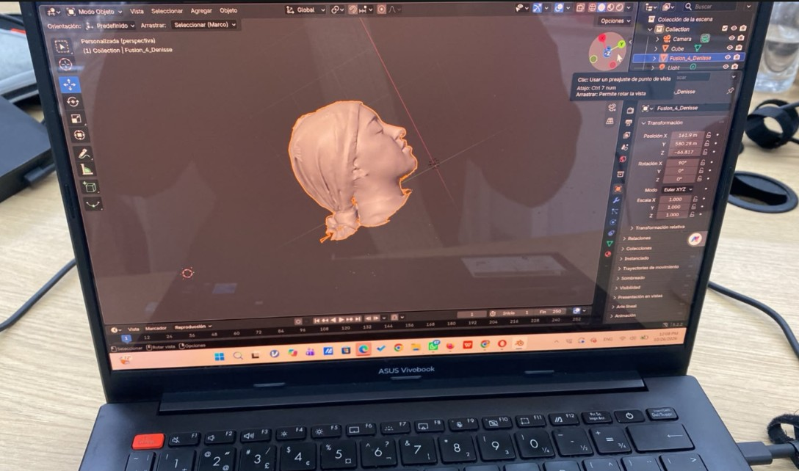
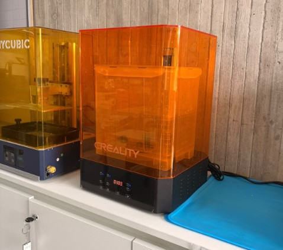
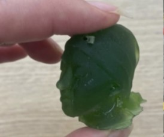

DOCUMENTACIÓN · SEMANA 05
Semana 05
Durante esta práctica escaneamos el rostro de Denisse con un escáner Creality, editamos el modelo en Blender y lo preparamos en CHITUBOX para imprimirlo en resina. La cara impresa quedó bien y sus rasgos son reconocibles.
📌 Tema y objetivo de la práctica
Tema: caracterización de impresión 3D y escaneo tridimensional.
Objetivo: aplicar técnicas de impresión y escaneo 3D para conocer sus posibilidades, observar los resultados y comprender las etapas necesarias para preparar y fabricar un modelo tridimensional.
🔎 Descripción de la actividad
Escaneamos el rostro de Denisse mediante un escáner Creality. El modelo digital obtenido se editó en Blender, donde cerramos agujeros, suavizamos la superficie y quitamos algunos puntos.
Después, el modelo se preparó en CHITUBOX para imprimirlo en resina con una impresora Creality. En la preparación se añadieron soportes y un agujero en la cabeza para permitir la salida del líquido. El resultado fue una representación del rostro de Denisse en la que se reconocen sus rasgos.
⚙️ Procedimiento realizado
Escaneo con Creality
Escaneamos el rostro de Denisse para obtener un modelo digital tridimensional.
Edición en Blender
Cerramos agujeros, suavizamos la superficie y quitamos algunos puntos innecesarios del modelo.
Preparación en CHITUBOX
Añadimos soportes y un agujero en la cabeza para facilitar la salida del líquido.
Impresión en resina
Enviamos el modelo preparado a una impresora Creality de resina.
Curado final
Los integrantes participaron en el curado de la pieza durante cuatro minutos.
🛠️ Equipos, materiales y programas
Escáner: equipo Creality utilizado para digitalizar el rostro de Denisse.
Blender: programa utilizado para cerrar huecos, suavizar la superficie y eliminar algunos puntos del modelo.
CHITUBOX: programa utilizado para preparar la impresión en resina, añadir soportes y crear un agujero en la cabeza para facilitar la salida del líquido.
Impresora de resina: equipo Creality.
📊 Registro de actividades y resultados
| Actividad | Procedimiento | Resultado conocido |
|---|---|---|
| Impresión FDM | Impresión de un objeto plano y otro con voladizos. | Se realizaron las dos impresiones. |
| Escaneo 3D | Escaneo del rostro con un equipo Creality. | Se obtuvo un modelo digital del rostro. |
| Edición digital | Cierre de huecos, suavizado y eliminación de puntos en Blender. | Modelo editado para continuar con la preparación. |
| Preparación | Uso de soportes y creación de un agujero para la salida del líquido. | Modelo preparado en CHITUBOX. |
| Impresión en resina | Fabricación del rostro de Denisse. | Quedó bien y se reconocen sus rasgos. |
| Curado | Curado de la pieza impresa. | Cuatro minutos de curado. |
El tiempo de impresión en resina fue de 4 horas, 40 minutos, con un curado de 2 sesiones de 2 minutos
🦺 Seguridad durante el trabajo con resina
Durante la limpieza del equipo relacionado con la resina utilizamos guantes quirúrgicos y mascarilla KN95.
La manipulación y limpieza de la resina debe realizarse siguiendo las indicaciones del laboratorio y del fabricante, con ventilación y los elementos de protección que correspondan al procedimiento.
👥 Participación del equipo
Denisse: fue la persona escaneada, trabajó en la edición del modelo en Blender y colaboró en la impresión en resina.
Michelle: revisó CHITUBOX y envió el modelo a impresión.
Andy y David: participaron en la revisión del suavizado de la pieza.
Todo el equipo: se encargó de escanear a Denisse, y participó en el curado de la pieza durante cuatro minutos.
📁 Archivos descargables
DOCUMENTACIÓN VISUAL
📷 Evidencias del escaneo y la impresión 3D
Fotografías del trabajo de escaneo, edición del modelo y fabricación de la pieza.

Primera evidencia de la práctica.

Segunda evidencia de la práctica.

Tercera evidencia de la práctica.

Cuarta evidencia de la práctica.
🌱 Lo aprendido
Aprendimos que el escaneo tridimensional permite obtener un modelo digital de una figura real y que la edición es importante para corregir la geometría antes de fabricar la pieza.
En el proceso de resina, comprendimos la importancia de preparar el modelo con soportes y con una abertura para facilitar la salida del líquido.
🧠 Conclusiones
La práctica permitió conocer diferentes etapas de la fabricación digital: impresión FDM, escaneo 3D, edición de una malla y preparación de un modelo para impresión en resina.
La impresión del rostro de Denisse quedó bien y conservó rasgos reconocibles. El trabajo también destacó la importancia de corregir el modelo digital, preparar soportes y utilizar protección durante la limpieza del equipo con resina.